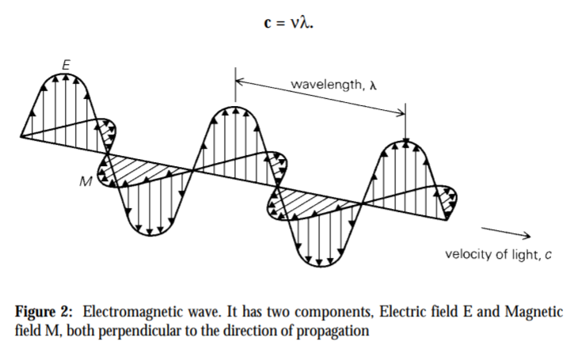

2 An Introduction to Remote Sensing
2.1 Summary
2.1.1 Source
Landsat, Sentinel, et al.
2.1.2 Application
- Near real time land cover data set with 10m resolution
- Urban/green space coverage and accessibility
- Pollution studies
- Illegal logging
- Forest fires
- Temperature studies (urban heat island)
- Flooding / disaster response / building footprints, et al.
2.1.3 Remote Sensing
Acquiring information from a distance, achieved through sensors on platform(e.g.Satellites, Planes (aerial imagery), Drones, Phones, Free standing on the ground or sea (with hand held devices))
two types of sensor: Passive & Active

2.1.4 Electromagentic waves
Waves of an electromagnetic field, travel through space and carry radiant energy = Electromagnetic radiation (EMR)

2.1.5 Interacting with Earth’s surface
EMR experiences a number of changes prior to hitting the sensor
Surface: absorbed & transmitted
Atmospheric: Rayleigh & Mie & Non selective
*Because of atmospheric scattering, we have a big issue which can prevent capture of land/the target–clouds–removing them through atmospheric correction
2.1.6 Four resolutions
- Spatial = the size of the raster grid per pixel (e.g. 20cm or 30m)
- Spectral = the number of bands it records data in（We can only observe where there aren’t absorbed by the atmosphere.）can be discrete (e.g. multi spectral) or continuous (e.g. hyper spectral)
- Temporal = the time it revisits (e.g. daily, every 7 days, on demand)
- Radiometric = identify differences in light or reflectance, in practice this is the range of possible values
2.1.7 what sensor is most appropriate depents on
- Size of features
- Date range
- Revisit requirement
- Spectral sensitivity
- Cost